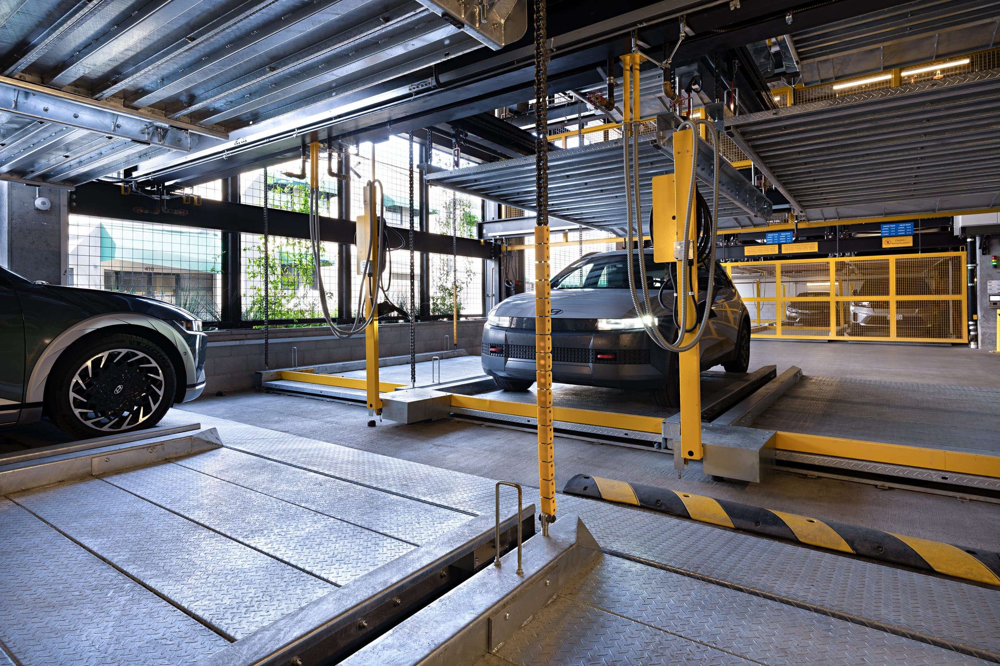
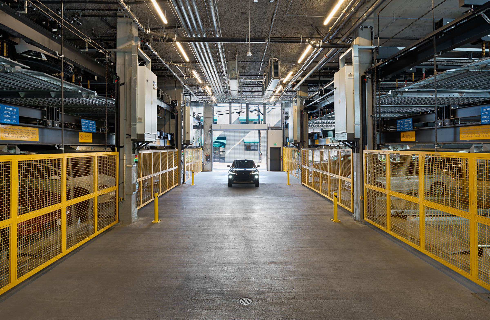
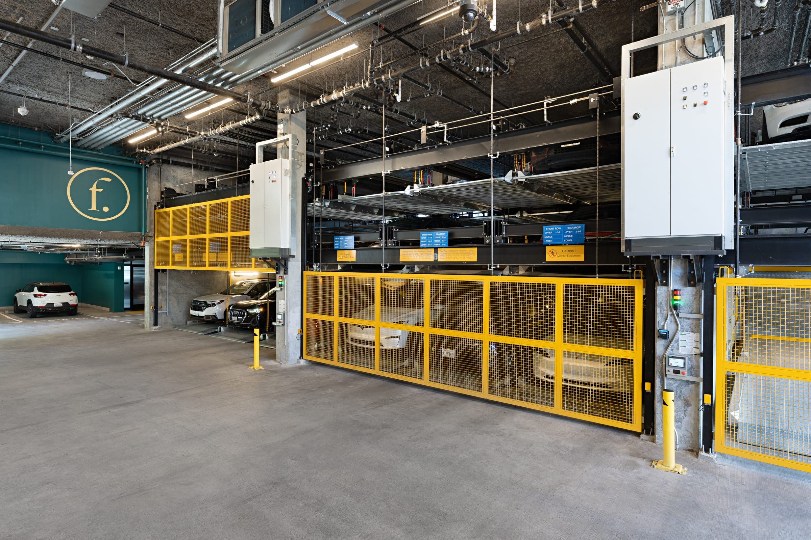
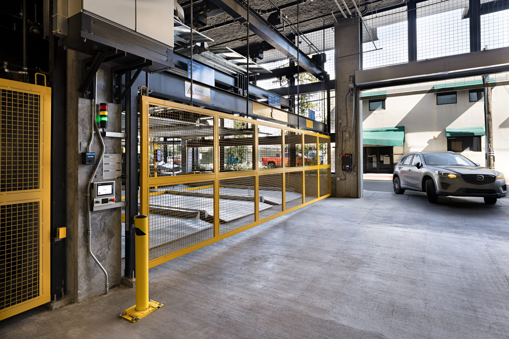
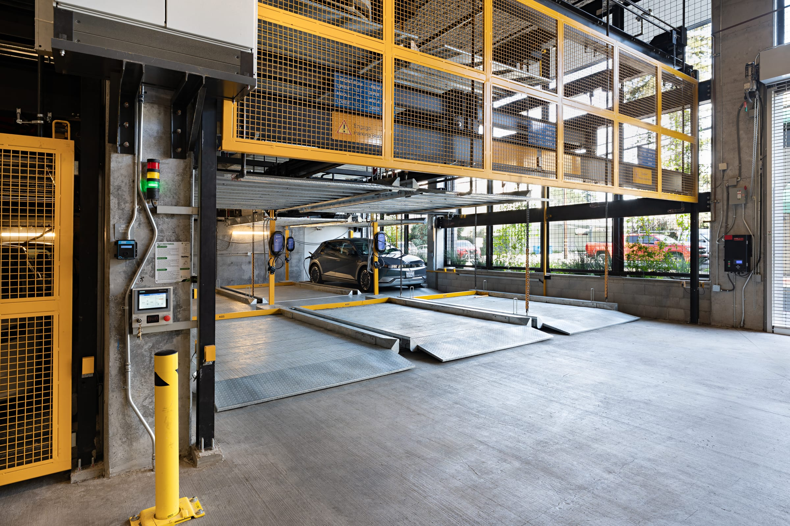
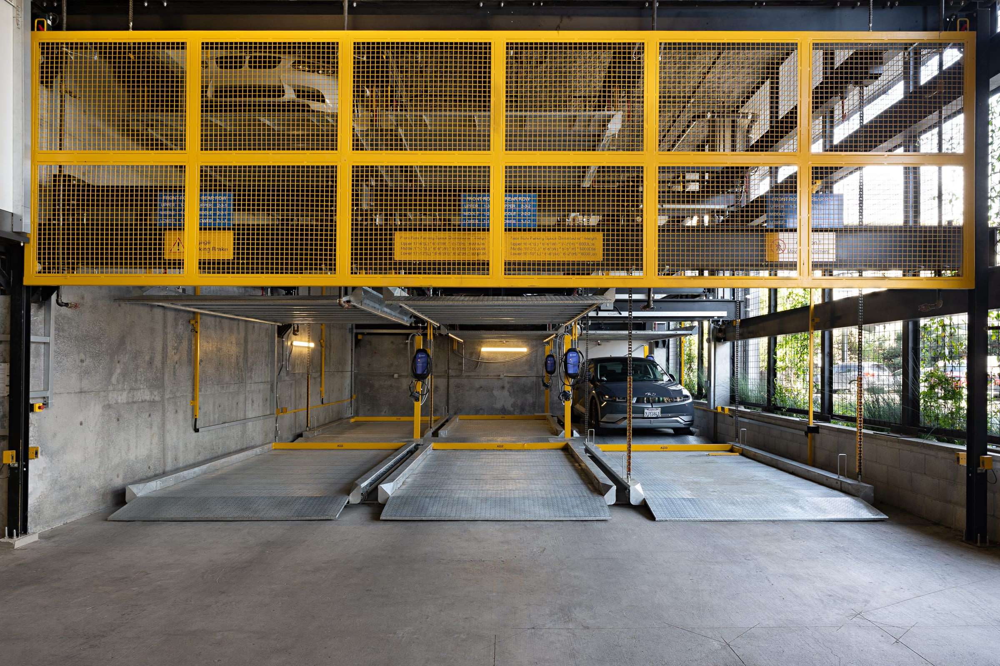
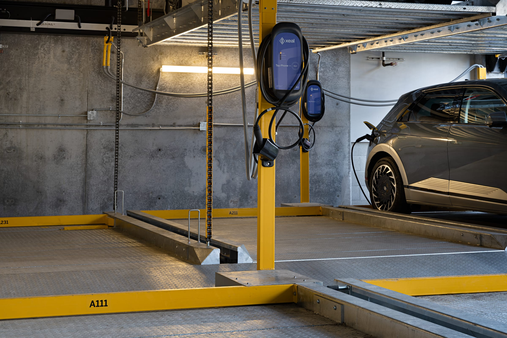
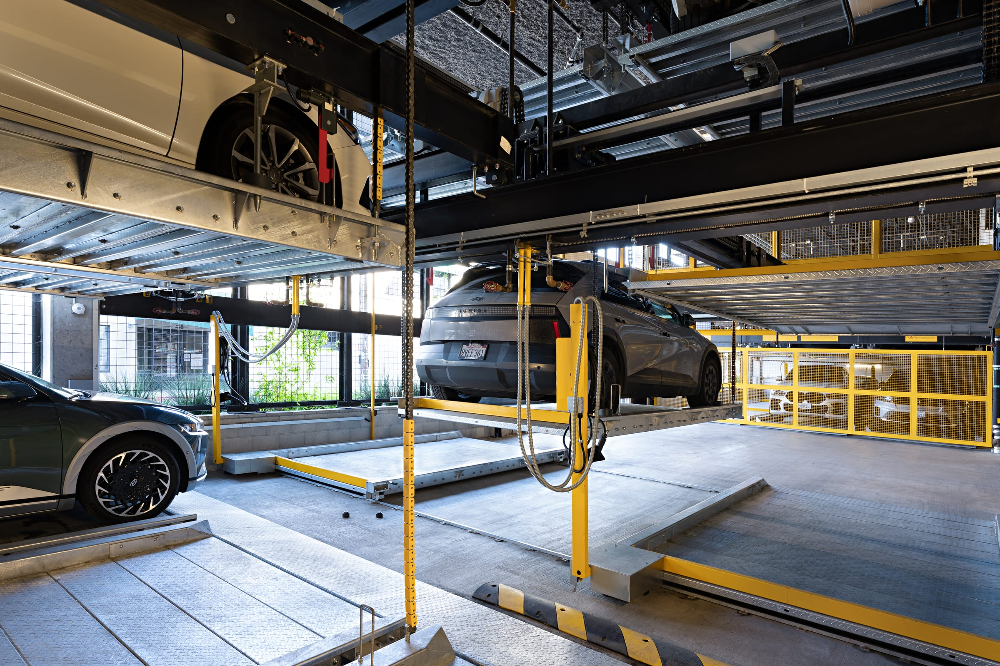
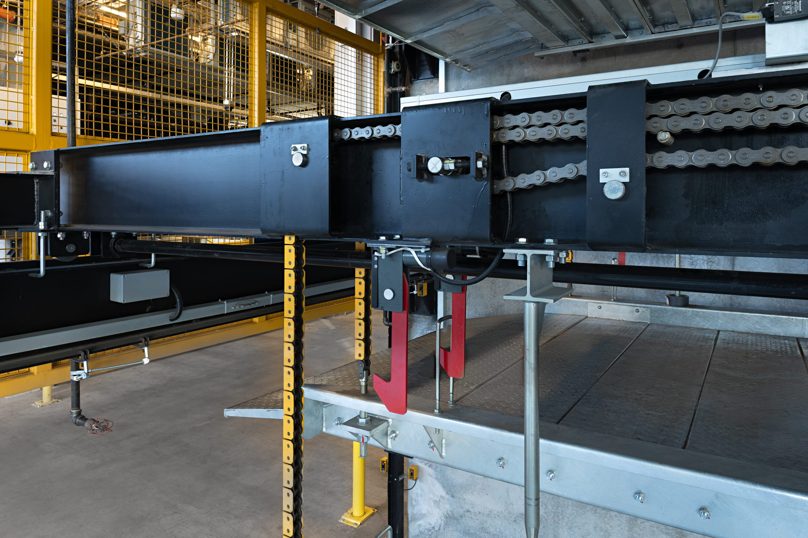
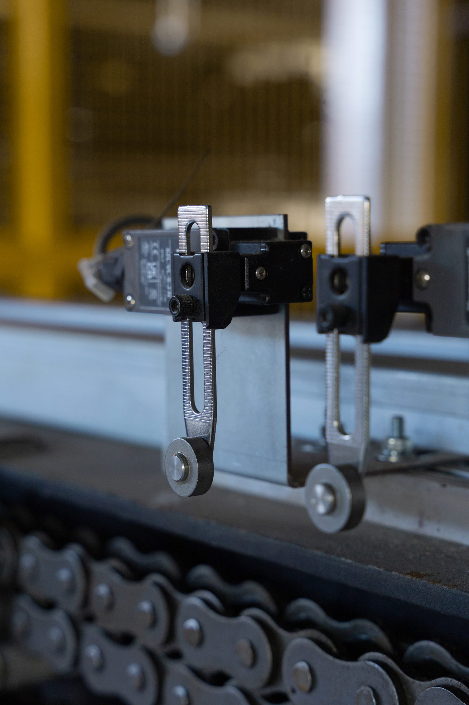

Parkworks Automation - Felix Apartments
Industrial and engineering photography documenting a semi-automatic lift-and-slide parking system at Felix, a 168-unit apartment community in downtown Santa Rosa










Project Overview
This was a standard documentation shoot of a finished system, my fourth garage for Parkworks Mechanical Systems. Felix is a 168-unit apartment community at 420 Mendocino Avenue in downtown Santa Rosa, developed by Related California and designed by David Baker Architects. Parkworks built a semi-automatic lift-and-slide system, platforms three high and three deep, that holds 96 cars in a small garage footprint, with EV charging integrated into the stalls. It was the first system of its kind in Sonoma County, and the building has earned LEED Gold certification.
This is a ground level garage with openings to outside light, the best kind for lighting, so I could mix natural light with strobes. There was enough outside light in this part of the garage to forego the strobes for the headlights shot. A Parkworks employee had her car washed for the shoot, drove it onto the platform, and I shot five-shot brackets and a single exposure of just the outdoor scene. In the final composite I made the outside brighter and a bit overexposed to make it feel more realistic, and not like a pulled real estate interior where the outside looks fake. I used strobes for fill, and for texture on the control panel shots.
- Client: Parkworks Mechanical Systems
- Location: Felix, 420 Mendocino Avenue, Santa Rosa
- System: semi-automatic lift-and-slide, three high and three deep, 96 vehicles, integrated EV charging
- Building: 168-unit apartment community, Related California (developer), David Baker Architects (architect), LEED Gold
- Photography Focus: Architectural & Systems Documentation
- Light: daylight from the garage openings, strobes for fill and texture, the car's headlights
- Shot: February 2026
Ten frames from the delivered set, from the full garage down to the chain that lifts the cars.
Discuss Your Project